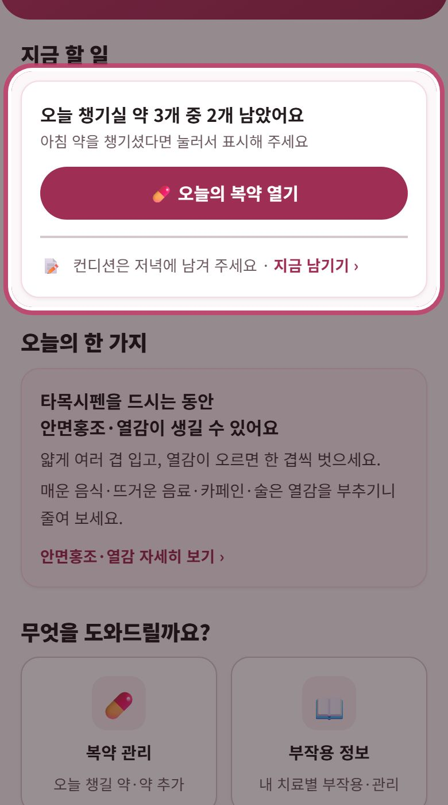
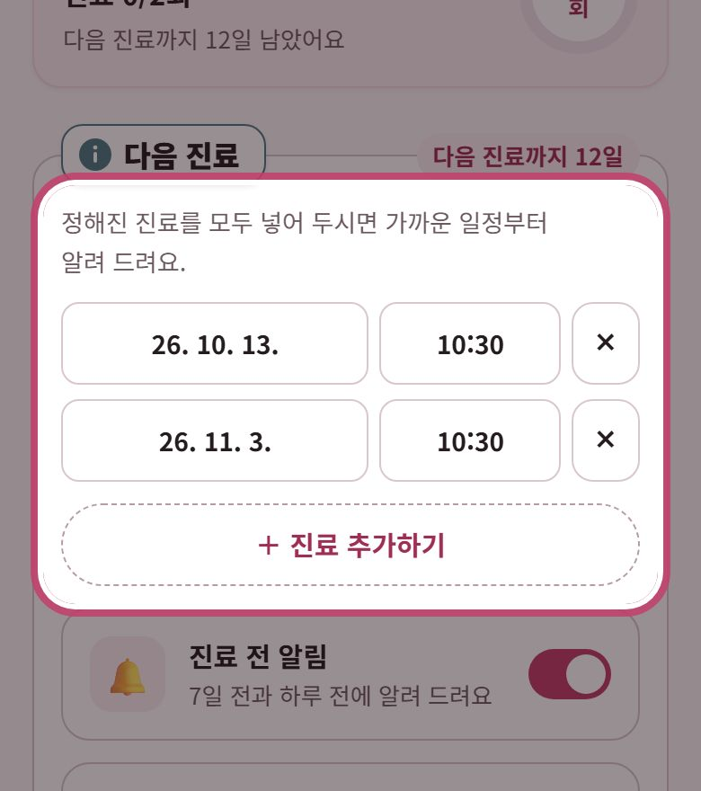
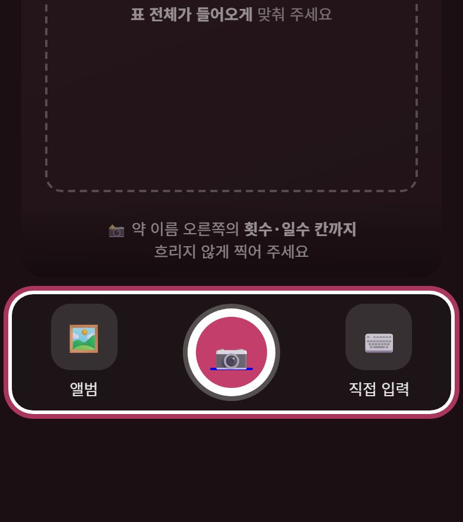
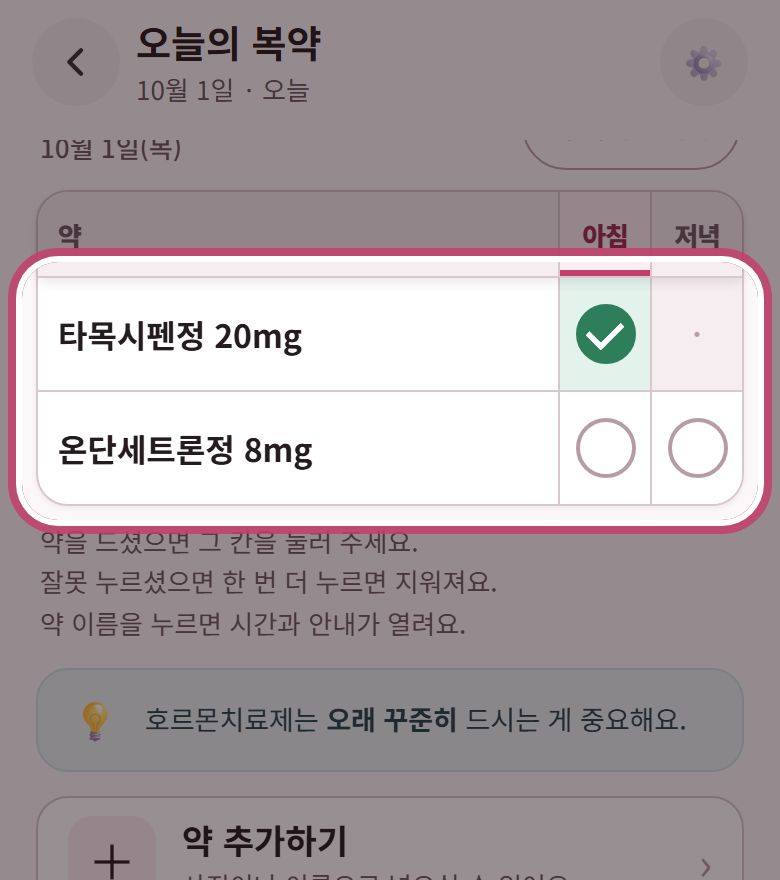
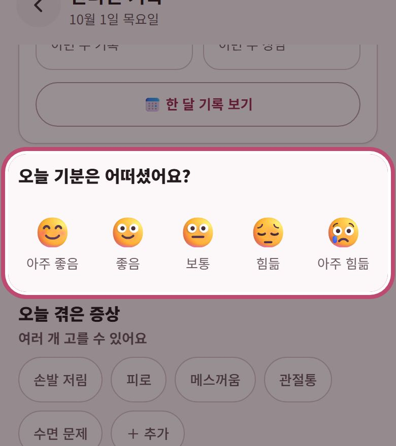
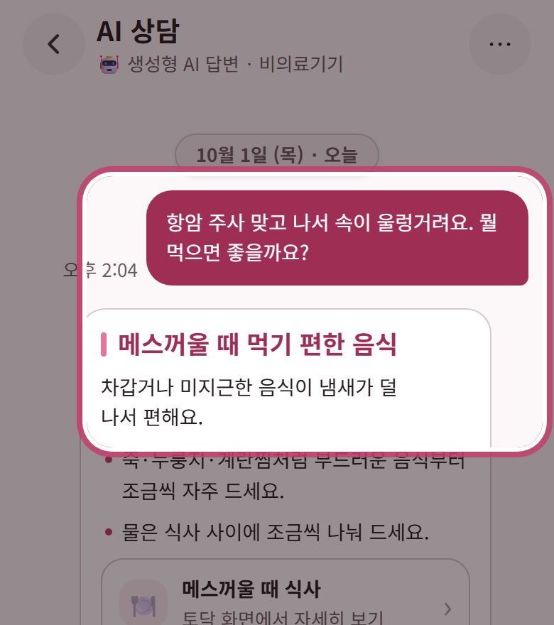
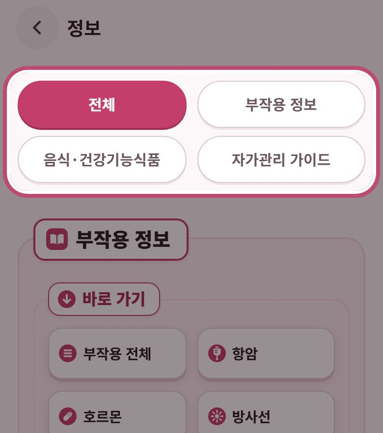
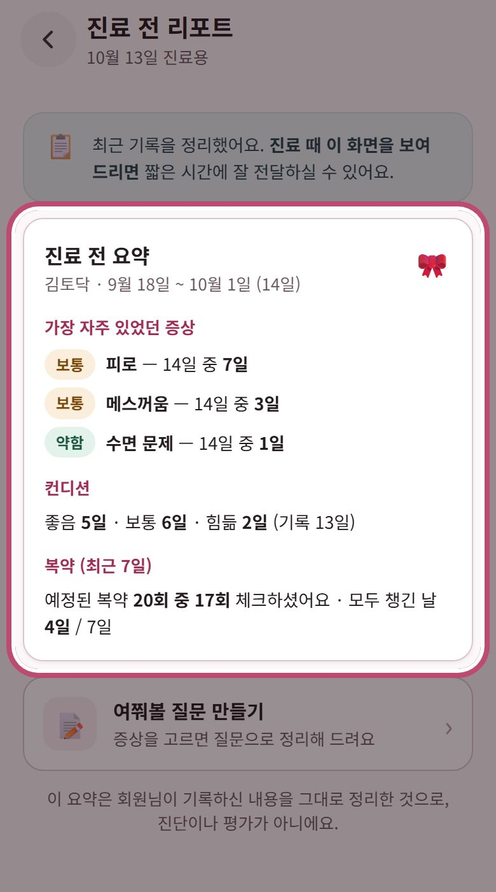

약 챙길 때, 컨디션 남길 때에 맞춰
지금 챙길 일을 맨 위에 알려 드려요.


진료 전과 약 드실 시간에 알려 드려요.
먹는 약이 없으면 건너뛰셔도 괜찮아요.


정한 시간이 되면 알림으로 알려 드려요.


🚨위험 신호가 있으면 앱보다
119나 치료받는 병원에 먼저 연락하세요.

홈의 ‘진료 준비’에서 열어
진료 때 이 화면을 보여 주세요.
토닥은 의료기기가 아닌 건강정보 참고용이에요.
진단·처방은 담당 의사와 상의하세요.